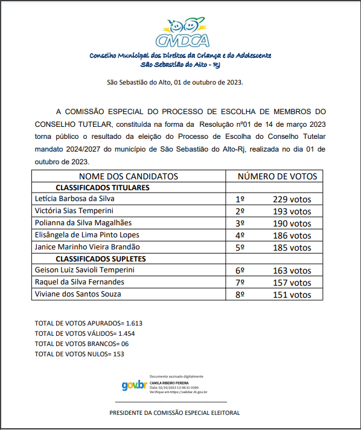

2023

2019
- RESOLUÇÃO 001-2019 – ELEIÇÃO 2020-2023 – REGULAMENTAÇÃO DO PROCESSO DE ESCOLHA DE MEMBRO DO CONSELHO TUTELAR (clique aqui para abrir)
- CANDIDATOS INSCRITOS PARA O PROCESSO DE ESCOLHA DO CONSELHO TUTELAR 2020-2023
- RESOLUÇÃO 10 DE 07 DE JUNHO DE 2019 – REPUBLICAÇÃO DO ARTIGO 40
- RESOLUÇÃO 13 DE 08 DE JULHO 2019 – ALTERA ARTIGO 10 DO EDITAL
- CANDIDATOS INSCRITOS APTOS PARA PROVA
- GABARITO OFICIAL
- RESOLUÇÃO 014-2019 – ANULAR A QUESTÃO 07 DA PROVA DE AFERIÇÃO
- RESOLUÇÃO 015-2019 – LISTAGEM DOS APROVADOS
- RESOLUÇÃO 016-2019 – ANULAR A PROVA DE AFERIÇÃO DO PROCESSO DE ESCOLHA DE CONSELHO TUTELAR MANDATO 2020/2023
- RESOLUÇÃO 017-2019 – REMARCAR A PROVA DE AFERIÇÃO DO PROCESSO DE ESCOLHA DO CONSELHO TUTELAR MANDATO 2020/2023
- GABARITO OFICIAL PROVA 25-08-2019
- CANDIDATOS E ELEITOS E SEUS RESPECTIVOS SUPLENTES MANDATO 2020-2023